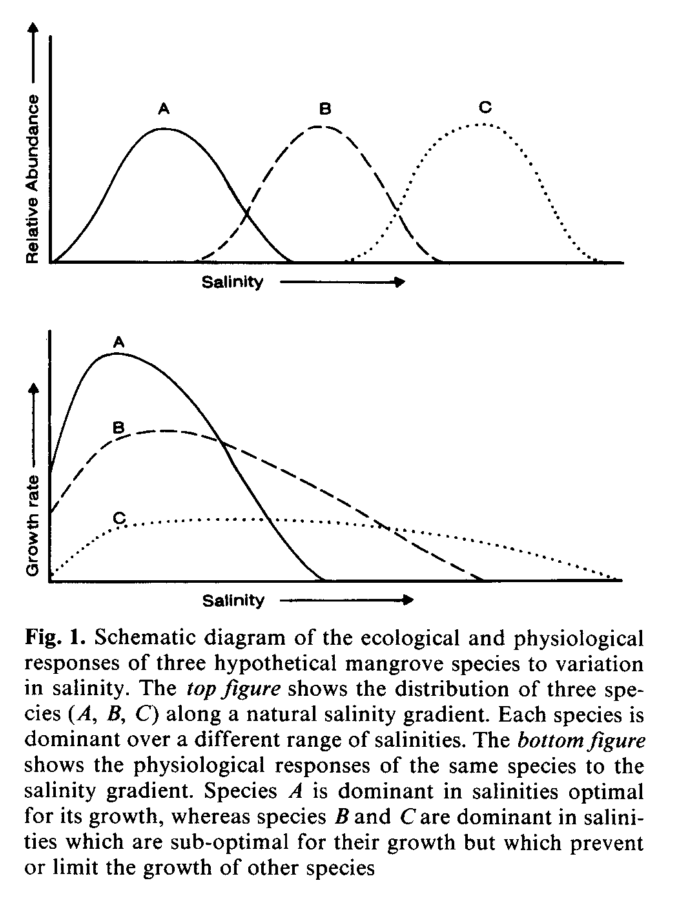

3.2 Ecophysiology & establishment
3.2.1 Chapman, 1976
“Ch. 8 - Ecological factors” (Chapman 1976a)
Key contribution: This is a somewhat dated review of ecological factors that are influential on mangrove vegetation. There are more recent reviews that should be referred to, but this chapter provides a nice overview of some of the earlier work related to mangrove vegetation and ecological factors.
Key notes:
Inundation - The effects of salinity versus frequency and duration of inundation likely influences seedlings versus mature trees differentially. Inundation “classes” were originally proposed by Watson (and others), but likely have little practical value now. Number of days of lack of inundation is understood (by Chapman) to be the most important component of “inundation” more broadly. There is a seasonal component that is important to consider (i.e., areas that have no tidal inundation and no rainfall may be more hypersaline and hostile to establishment).
Salinity - Chapman notes that there are correlations between salinity and presence of vegetation, but the relationships may be overstated.
Soil composition - The texture of soils is extremely important as it relates to drainage and also aeration of the soil. The presence of sand within the soil can be extremely important; often have complete lack of oxygen within 5 cm soil depth (along channels as well). Presence of peat or other organic layers can greatly influence gas and water infiltration. The dark color of soils is related to iron sulfide production by anaerobic bacteria.
Water table and drainage - The mean level of the water table has been found at some sites to increase as you move towards the shoreward section of the forest. There is very little movement with seasonal changes in tide (i.e., spring vs. neap tides), which may be related to the texture of the soil present. Some carbonate settings have extremely coarse substrates (majority of sand > 2 mm).
non NaCl soil chemistry - CEC is generally higher in the surface levels of the soil.
Biota: Chapman provides 6 habitats in which biota exist, as an extension of MacNae. They most significant habitat for my particular research purposes are the ecosystem engineers, which would consist of the crustaceans that inhabit the canopies, the soil surface, and the soil itself.
Further reading: Need to look up sulfur reduction processes.
3.2.3 Ball, 1988
“Ecophysiology of mangroves” (Ball 1988)
Key significance: This is an excellent review of the ecophysiology (how the phyisology of the trees responds to their particular environment) of mangrove trees. This paper should be reviewed more than once.
One of the key concepts to emerge from this study is:
- Mangroves have largely evolved to have large tolerances to salinity and inundation given the very dynamic environments in which they exist. Rather than evolving to exist in narrow niches, competition may drive zonation and thus the existence of multiple species in moderate stress environments.
Key notes:
Waterlogging - Key fact is that oxygen diffuses through air 10,000 times more rapidly than through water, thus root systems of mangroves are adapted such that they avoid extensive inundation through areal roots.
- degree of soil saturation effects form and availability of different nutrients – how specifically does this happen?
- may have different amounts of availability of P and N along the tidal gradient
- N primarily exists as ammonia in frequently tidal regions, which binds easily to organic compounds and thus persists within the soil system
- N exists primarily as nitrate in less frequently flooded zones, which is more prone to leaching. Typically find that these zones are P limited rather than N limited, however, which is easily absorped onto clay or precipitated with Ca, Al, or Fe
Salinity - Important to remember that tolerance of salinity is largely dependent upon the developmental stage of the plant! The presence of cotyledonary reserves allow seedlings to persist in conditions that are otherwise inhospitable to them, but may not establish successfully following depletion of these reserves.
Mangroves frequently classified according to three different mechanisms of tolerance:
- salt exclusion - all mangroves exclude salt at the root tips
- salt accumulation - all mangroves accumulate ions (though they show preferential differences for different ions) to maintain osmoregulation
- salt excretion - selective species have ability to excrete salts
The particular salinity tolerance of a species may be particularly difficult to determine due to the species deriving water from sources other than surface water (i.e., freshwater underground seepage). Compartmentalization of ions is extremely important for maintaining biochemical processes, for example photosynthesis, especially for those species that are incapable of secreting salts.
The ratio of Na+ / K+ is important in chloroplasts (cell of the leaf responsible for photosynthesis). Deficiencies in K+ concentration have been shown to result in loss of photosynthetic capability, particularly for Avicennia species.
The major mechanism of ion transport into the transpiration system of the plant is through symplastic pathways (inside of plasma membrane where water and low-molecular-weight solutes can diffuse freely).
Species of some genera (Acanthus, Aegialitis, Aegiceras and Avicennia) are capable of secreting salt from leaves.
Photosynthesis - Most evidence points towards C3 photosynthetic pathways within mangrove species, however they exhibit very conservative water-use efficiencies relative to most C3 plants. Mangroves exhibit a variety of traits/mechanisms to manage water use efficiency while maintaining carbon assimilation.
Three major leaf characteristics for maintaining leaf temperatures that vary among species are:
- leaf angle - affects radiant heat loading on the leaf and can be adjusted to reduce solar incidence
- leaf size - heat transfer is a function of the leaf geometry and wind speed; decreases in leaf size allows the leaf to maintain temperatures close to ambient temperatures, with sacrificing solar incidence
- heat capacity per unit area - a function of dry weight and water content per unit area; higher heat capacity buffers against warming of leaves
A classic, hypothetical schematic of interspecific tolerances for salinity is shown below:
knitr::include_graphics(rep("images/ball1988Trees.bmp"))
Major tradeoffs - The two major tradeoffs that are seen in mangroves in relation to photosynthesis and salinity tolerances are:
- Salt exclusion during water uptake may induce significant carbon costs to the plant; often seen through more root biomass coupled with decrease in rate of water uptake
- High water use efficiency restricts rates of water efflux but also restricts rates of CO2 influx
Relevant for research:
- differential amounts of root biomass may be seen along salinity gradients due to differing degrees of water use efficiency and maintenance of photosynthetic production - what are the implications for soil C?
3.2.4 McKee, 1993
“Soil physicochemical patterns and mangrove species distribution - reciprocal effects?” (McKee 1993)
Key contribution:
Methods: The study employed field and greenhouse analyses to examine the impacts of reducing soil conditions and sulphide presence on seedling growth. Field work was performed in Florida, with common zonation of R. mangle in the fringe forest and mixes of R. mangle and A. germinans in the basin forest that filters out to monospecific stands of A. germinans in the most landward basin.
Soil samples were collected along transects directly next to Rhizophora prop roots, Avicennia pneumatophores, a mix of the two roots, as well as no roots for comparison of reducing soil conditions and sulphides. A factorial treatment arrangement for four flooding conditions on two species was designed in a greenhouse experimental setting to examine the effects of reducing conditions and sulfide on seedling growth, and vice versa.
Key results:
Field studies - Distinct zonation between both species composition and reducing soil conditions and sulphide were seen. Changes in Eh and sulphide concentration strongly correlated with shifts in species compositions.
- Higher Eh was found for mixed basin and fringe forest, whereas lower Eh was found with monospecific-basin Avicennia
- Higher sulphide concentrations were found in monospecific basin A. germinans region (contrasts with results of seedlings study).
Greenhouse studies - Greatest difference in biomass growth between flooding treatments was seen belowground. A. germinans exhibited much lower growth in the flooded treatments relative to the drained treatment, whereas flooding stimulated belowground growth in R. mangle.
Presence of sulphide had little effect on growth (AG or BG) of R. mangle, but was found to reduce AG and BG growth in A. germinans.
Additionally, the presence of both species induced higher redox potential (Eh) relative to soils without any mangrove seedilings. Addition of sulphide induced a reduction in Eh. - This is likely due to O2 leaking from mangrove roots into the rhizosphere and thus inducing higher redox potentials - May also reduce buildup of sulphide through oxidation of sulphide in rhizosphere or inhibiting activity of sulphate-reducing bacteria
Key conclusions: The authors make several key conclusions given their results:
- The results of the field and greenhouse experiments do not match, in that A. germinans was found in the portion of the forest with the highest sulphide conditions, but seedlings were found to be highly sensitive to low redox and high sulphide concentrations.
- Hypotheses are given that i) other controls on presence of R. mangle in this region are stronger than sulphide - A. germinans interactions, ii) may be a result of other factors (propagule dispersion, predation, competition), or iii) adult trees may exhibit different tolerances than seedlings
- The two-way effect of redox and sulphide on roots (and roots on redox) make it difficult to infer mechanistic processes from correlative studies
Other notes:
- Seawater is the primary source of sulphate for reduction by dissimilatory sulphate reducing bacteria. H2S may be present in degrees to be toxic to mangroves, particularly seedlings.
3.2.5 McKee, 1995
“Seedling recruitment patterns in a Belizean mangrove forest” (McKee 1995)
3.2.6 Sherman, 1998
“Soil-plant interactions in a neotropical mangrove forest: Iron, phosphorus and sulfur dynamics” (Sherman, Fahey, and Howarth 1998)
3.2.7 Krauss, 2008
“Environmental drivers in mangrove establishment and early development: A review” (Krauss et al. 2008)
Key contribution: This is likely the most comprehensive and up to date review of ecophysiology and mangrove development in mangroves. This should be reviewed several times.
Five central paradigms - Krauss et al provide five central paradigms that shape a lot of the work thinking and work related to mangrove eco-physiology:
- Lack of a functional understory in most mangrove forests - often have seedlings and saplings, but no vines, herbaceous plants or shrubs. Several studies have concluded that terrestrial understory species have just not adapted shade or salinity tolerance (or both)
- Inundation classifications - studies have shown that species are found in distinctive zones, but also that many species of mangroves are capable of colonizing a wide range of inundation frequencies; one of the earliest definitions of inundation classes was given by Watson, 1928
- Salinity tolerance, zonation and biomass allocation - Much of this work has been forwarded by M. Ball, e.g., see Ball 1988, Section @(ball1988). The interaction of inundation, salinity, soil saturation and fertility has been found to explain zonation in many instances, though not necessarily all. Mangrove zonation is a hypothesis-rich field.
3.2.8 Dangremond, 2015
“Environmental tolerances of rare and common mangroves along light and salinity gradients” (Dangremond, Feller, and Sousa 2015)
References
Chapman, Valentine Jackson. 1976a. “Ecological Factors.” In Mangrove Vegetation, 190–223. Strauss & Cramer GmbH.
Chapman, Valentine Jackson. 1976b. “Physiology of Mangroves.” In Mangrove Vegetation, 224–69. Strauss & Cramer GmbH.
Ball, Marilyn C. 1988. “Ecophysiology of Mangroves.” Trees 2 (3): 129–42. doi:10.1007/BF00196018.
McKee, Karen L. 1993. “Soil Physicochemical Patterns and Mangrove Species Distribution–reciprocal Effects?” Journal of Ecology, 477–87. doi:10.2307/2261526.
McKee, Karen L. 1995. “Seedling Recruitment Patterns in a Belizean Mangrove Forest: Effects of Establishment Ability and Physico-Chemical Factors.” Oecologia 101 (4): 448–60. doi:10.1007/BF00329423.
Sherman, Ruth E, Timothy J Fahey, and Robert W Howarth. 1998. “Soil-Plant Interactions in a Neotropical Mangrove Forest: Iron, Phosphorus and Sulfur Dynamics.” Oecologia 115 (4): 553–63. doi:10.1007/s004420050.
Krauss, Ken W, Catherine E Lovelock, Karen L McKee, Laura López-Hoffman, Sharon ML Ewe, and Wayne P Sousa. 2008. “Environmental Drivers in Mangrove Establishment and Early Development: A Review.” Aquatic Botany 89 (2): 105–27. doi:10.1016/j.aquabot.2007.12.014.
Dangremond, Emily M, Ilka C Feller, and Wayne P Sousa. 2015. “Environmental Tolerances of Rare and Common Mangroves Along Light and Salinity Gradients.” Oecologia 179 (4): 1187–98. doi:10.1007/s00442-015-3408-1.